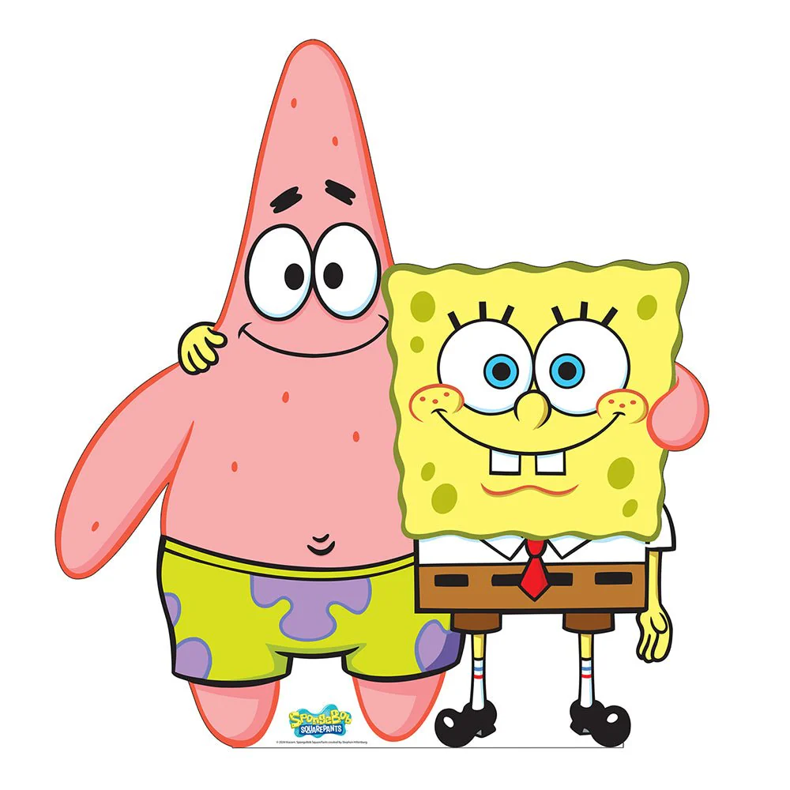

bob esponja e patrick

AJUDAR AS PESSOAS
COZINHAR
SER UM BOM AMIGO
CUMPRIR SUAS TAREFAS
TER AGILIDADE
citação do personagem
Estou pronto, estou pronto, estou pronto
RELACIONAMENTOS
amigos
sandy, senhor sirigueijo, guerry, perola ,entre outros...
AMIGOS
INIMIGOS
bubble bass, plankton, bolha suja... entre outros
INIMIGOS
CURIOSIDADES
Bob é uma esponja do mar que vive na cidade Fenda do Biquíni, localizada no fundo do oceano.
Ele mora em um abacaxi e trabalha como cozinheiro na lanchonete Siri Cascudo
Seu bordão preferido é "Estou Pronto!"
CURIOSIDADES
8